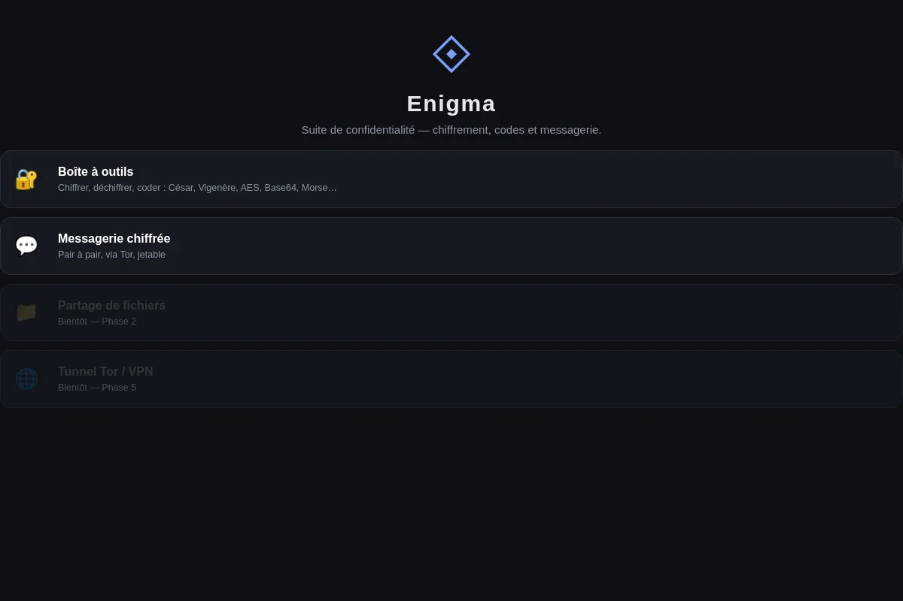

Projet perso

Enigma : suite de confidentialité
Une boîte à outils de chiffrement (codes classiques, AES, hachage) et une messagerie pair à pair chiffrée, sans serveur ni compte, qui passe entièrement par Tor.
En cours de développement